Sole UX Designer, Researcher
Solo project
Interaction design, UX design, UX research
Figma, Google Forms
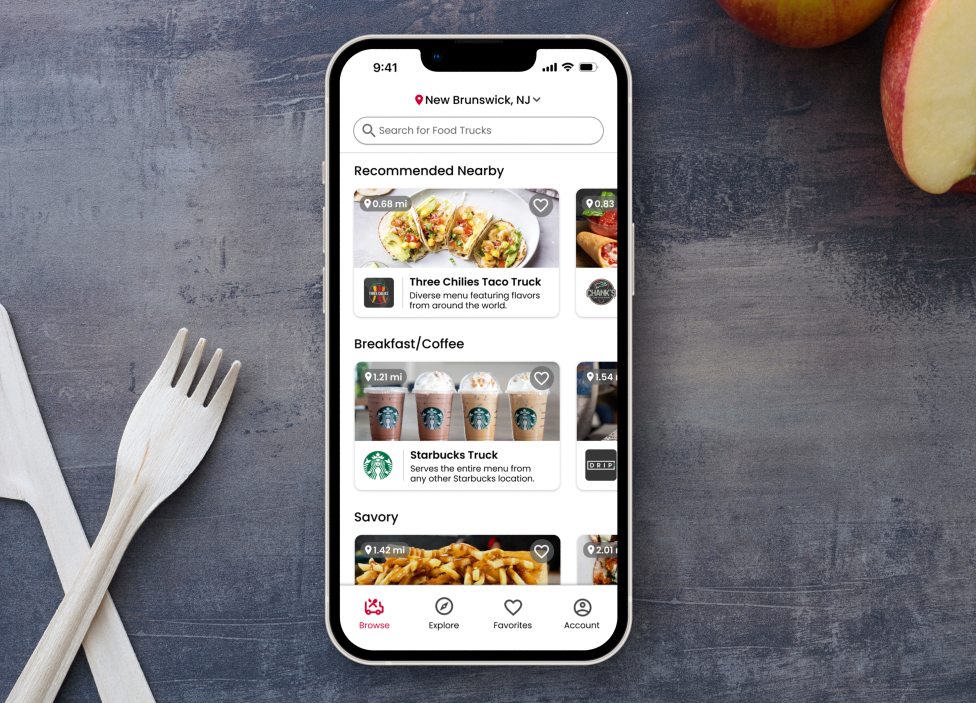
Rutgers University is known for its iconic food trucks. However, finding them and ordering from them is a big challenge.
First, it’s hard to find any information about these trucks. Their location isn’t shown anywhere online, which is especially an issue because Rutgers is a massive school with 5 different campuses. There’s also no updated menus accessible online. If you are able to find a food truck, the lines are always extremely long as students try to squeeze in a visit between class times - making quickly picking up food on the go impossible.
The trucks have no online presence (besides a rarely updated Twitter account), making planning ahead difficult. So, the only way to experience a Rutgers food truck is if it happens to be outside your class, you’re one of the first in line, and the menu aligns with what you’re looking to eat.
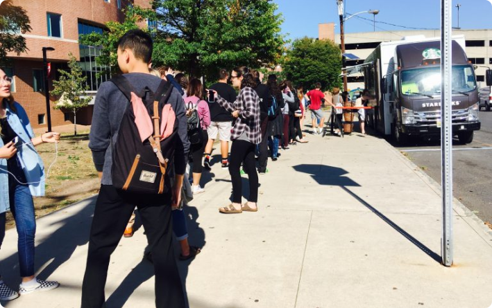
An app that can help students get information like menus, schedules, and locations for these food trucks, including the ability to order online for quick and easy pick up.
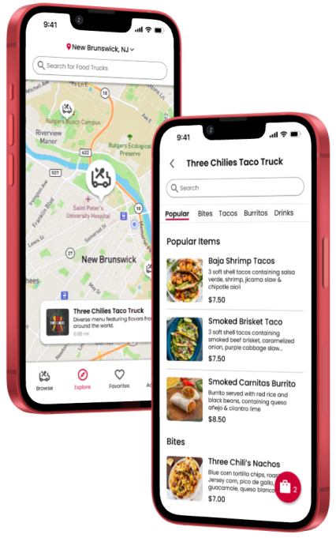
I conducted interviews to understand students’ thought process when trying to visit the food trucks, as well as positive and negative experiences they've had.
I was able to summarize findings into a few main pain points.
There is very limited information anywhere about where the food trucks are parked each day at Rutgers, and when they will be there, especially since they move daily.
There are no easily accessible menus online for any of the food trucks, and no dietary information is available either. The only way to see the menu is to walk up to the food truck in person.
The lines for the food trucks are always very long, requiring at least a 20 minute wait, and there is no way to order online for pick up, making quick stops impossible.
I created a journey map to help me pinpoint what aspects of the current food truck situation were most challenging for users and why.
Goal: locate a food truck and get lunch there before class
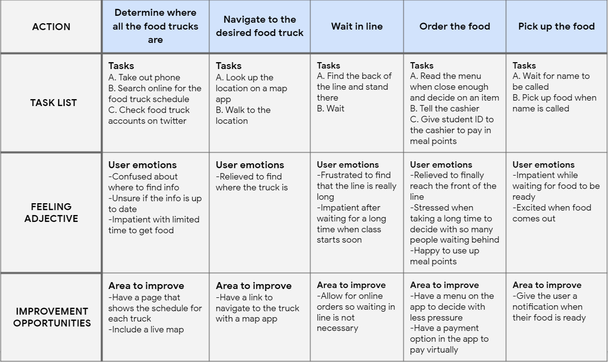
There is no streamlined process for ordering from these trucks, and factors like time can vary greatly.
Analyzing the user journey helped me explore opportunities to help solve common pain points.
I wanted to make sure users who are unfamiliar with campus could still easily find the food trucks, so I chose a live map for the home screen to begin the user flow.
Next, all questions a user has about a food truck could be answered in the truck info page, after selecting a truck on the map or corresponding menu.
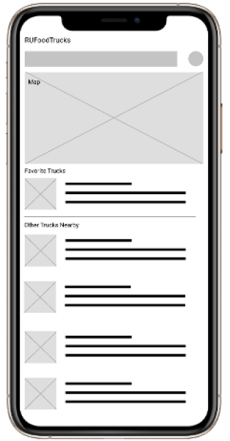
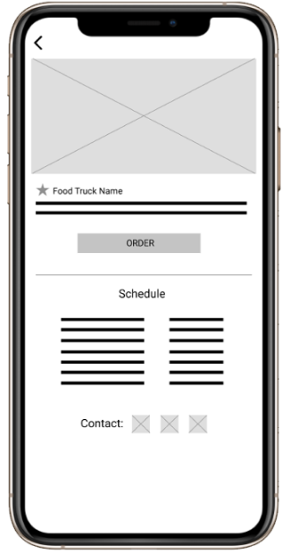
I wanted to make sure users who are unfamiliar with campus could still easily find the food trucks, so I chose a live map for the home screen to begin the user flow. I also wanted to have each truck shown in list form with basic but essential information for each.
Next, I wanted all important information for each truck to be in one central location for users to easily find all of it before ordering their food, so I laid it all out in the truck info screen.
Full user flow created with wireframes:
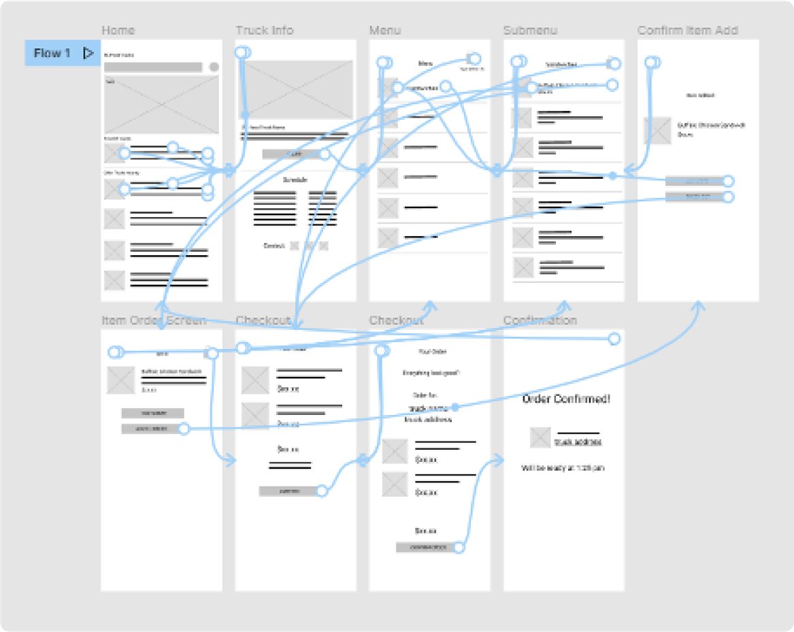
These wireframes are what I used to lay out the basic structure of the app.
It was at this point that I realized there is nothing necessarily unique about Rutgers food trucks, and a much wider audience could benefit from this product. So, I decided to change focus from an app for the Rutgers food trucks to an app that could help people discover and order from food trucks anywhere, of all kinds. (Including the Rutgers trucks, of course).
Food trucks around the world and their customers have the same everyday hardships and problems that the ones at Rutgers do. Long lines, misinformation about their locations, and a lack of information about food served is common in all kinds of food trucks.
To ensure goals of this wider audience of all food truck customers would still align with those of Rutgers students, I performed another round of user interviews with a more general demographic, as well as usability tests with my low-fidelity flows.
With the new scope of all food trucks, and more general usability studies, I was able to learn what would work best for this wider audience, and went through multiple design iterations.
I found that general food truck customers cared more about the food itself than college students did - and features like dietary information and in-depth meal customization were notably lacking in my designs. So, I used this input towards new iterations of my designs.
These are the final designs for the app that now helped users find and order from food trucks anywhere.
The browse page lets users see trucks nearby in categories to find the food they are craving.
One of the main advantages of a food truck is that it’s an eating establishment in a convenient location, ideal for pickup on-the-go. The map on the explore page takes full advantage of this aspect, helping users explore what’s convenient and nearby.
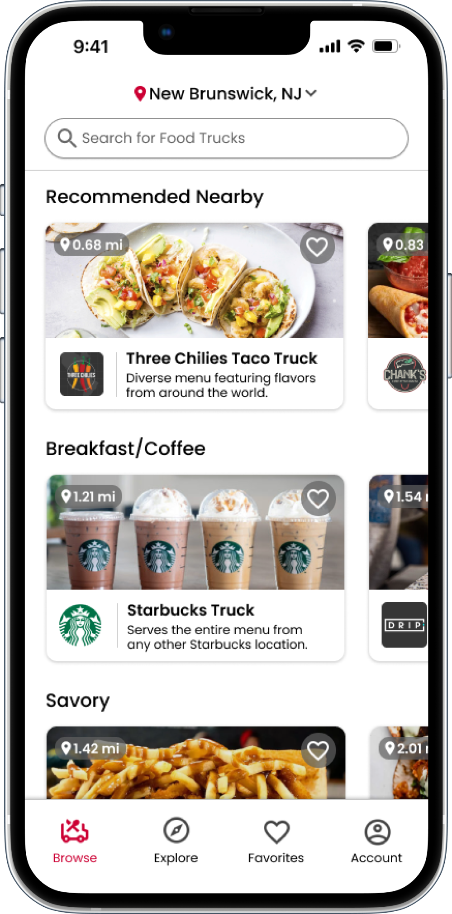
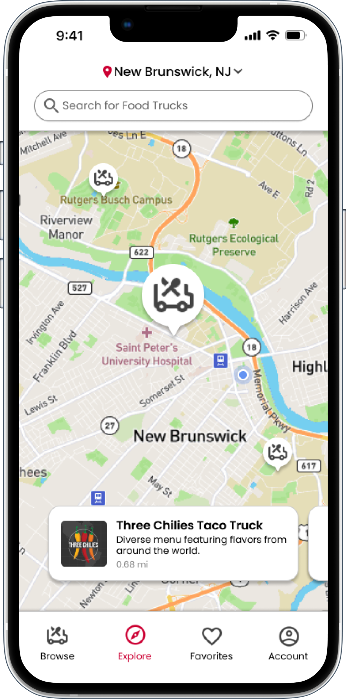
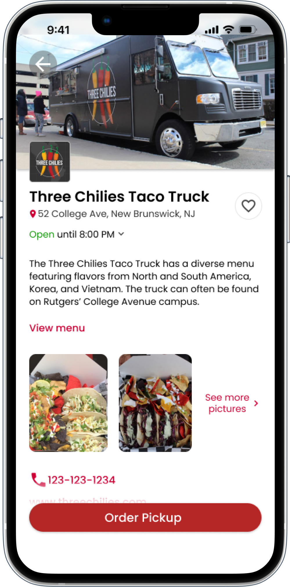
After choosing a truck in either of the past screens, the user is brought to the truck’s main page, which contains all information a user needs to make a well-informed food truck selection.
Once an order is started, the user is shown all the items on the menu, organized into categories, with correlating tabs for easy and quick browsing.
After selecting an item, the item’s information screen is shown, with a list of ingredients, caloric, and allergen information. The user has the ability to customize the ingredients and add special instructions to make the experience as inclusive as possible.
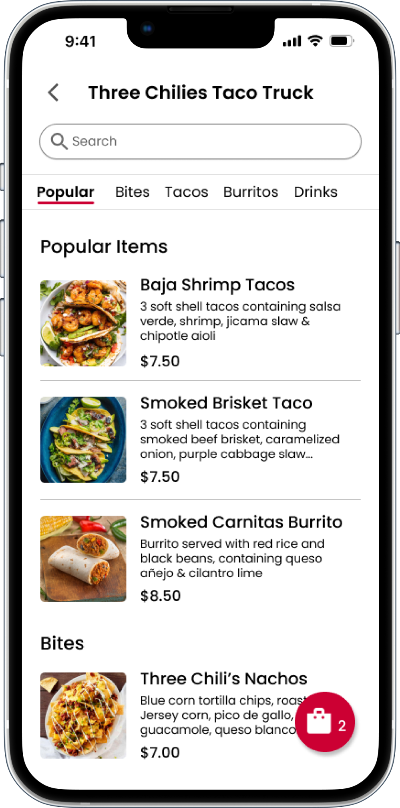
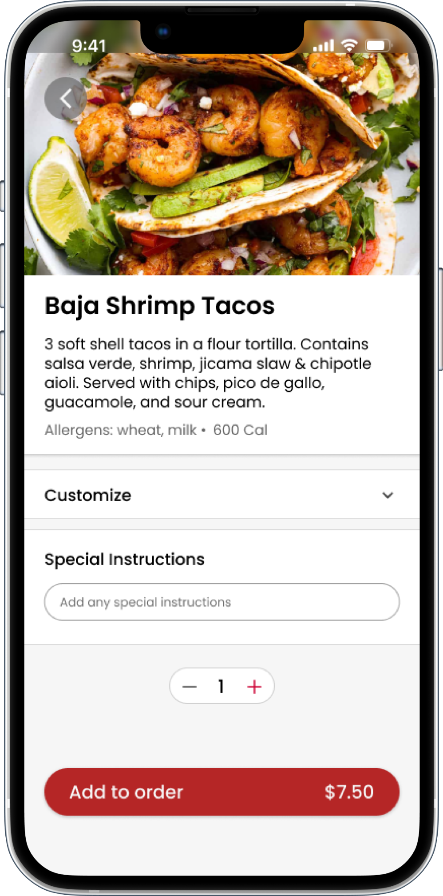
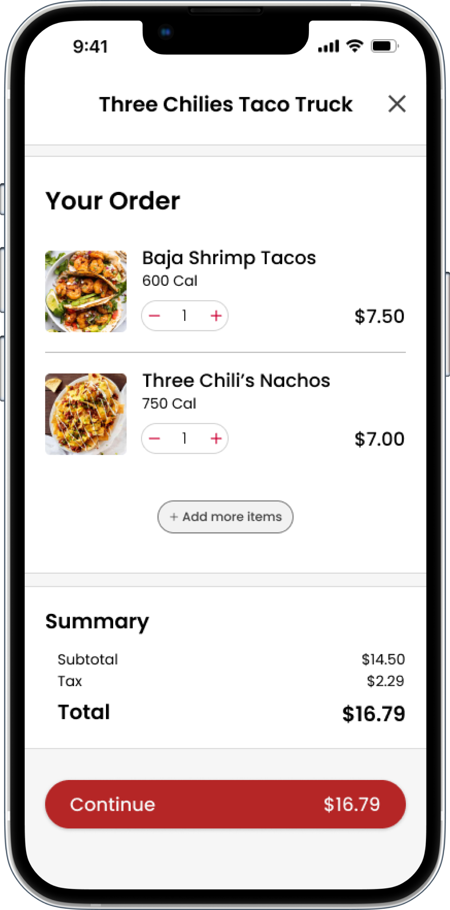
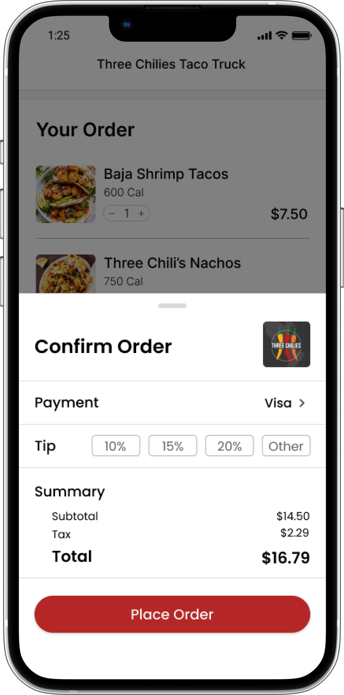
Selecting the floating “current order” button brings the user to their order screen.
The user has the option to change any aspect of their order from this single screen, leaving no room for confusion.
Continuing the order reveals a final overview of the order's price and payment info before it's placed.
Order confirmed! Selecting the address of the food truck opens it in the user’s default map application. The user can then navigate to the truck to pick up their freshly made meal!
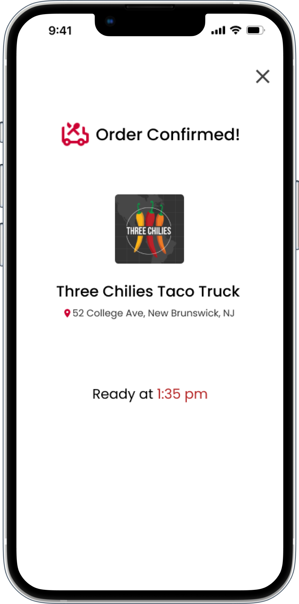
This was my first time designing an app that involved a checkout process. There are lots of patterns and features that users subconsciously expect with an app like this, and with a process that is used so often. The flow from ordering items, to the cart, possibly back to ordering items, and checking out, had to be fluid and remain familiar so users naturally know what to expect and aren’t confused while they’re using the app.
The scope of this project proved to be a bit of a challenge. While at first, I wanted to only focus on the food trucks affiliated with my school, Rutgers University, I realized this may not be the best route. I didn’t want to limit my ideas and make this a niche app that only students at one university could use, even if the smaller scope was more familiar to me. Opening the app to all food trucks felt like the right decision, especially since the user needs did not change much. This also allowed for a more useful app for all users.
StreetEats helps users by finding food trucks nearby, and making ordering from them seamless. I wanted this app to lean in to what makes food trucks special - their convenient locations and unique menus. By offering a quick and easy way to find food trucks on the go, and order ahead of time, users can take advantage of these factors that make food trucks unique, and can quickly grab food on the go.
With more time to develop and launch this app, I would consult with owners of food trucks to determine if StreetEats would be a viable solution to everyday problems food trucks encounter. If so, that is one step towards the success of StreetEats. The next step would be if StreetEats provides more business for these food trucks, especially ones with less of a digital precense. So, if food trucks become a more viable option for getting food, if they are more comparable to traditional restaurants when making decisions for meals, and the app benefits food trucks and their staff, then it would be a success.